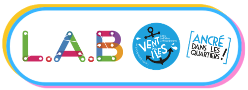

From the field. What AI looks like in young hands.
Funded by the European Union. Views and opinions expressed are however those of the author(s) only and do not necessarily reflect those of the European Union or the European Education and Culture Executive Agency (EACEA). Neither the European Union nor EACEA can be held responsible for them.
From the Pacman's lab in La Rochelle · how 'AI is not for me' slowly became 'I can do this'.
At twelve to fifteen, the participants from the Pacman's lab mostly knew AI only from a distance, from the media or the news. They had heard of it, barely used it, and many had real difficulties with writing. Put them in front of a blank prompt or a technical tool and the stress spikes, even though the curiosity is there. The problem was not a lack of appetite, but the fear of 'I won't manage' when the screen asks them to type.
Over the period, 17 young people took part, mostly aged twelve to fifteen, in La Rochelle. They joined on their own initiative and without obligation, so the group changed from session to session: some came regularly, others dropped in when they could. The facilitation adapted to whoever was in the room, pairing up, working in small teams, and designing challenges that made sense with a smaller or larger group. Most had heard of AI but hardly used it, and many arrived convinced it was not meant for them.
The goal this first period was not to explain AI, but to reduce the distance. We wanted the group to feel capable in front of a tool that looks intimidating, and to learn that an AI output is something you can test, question, and improve. The thread was simple: turn it into a comparison game with the AI, human first, AI second, so the group could see what the model does similarly, what it does differently, and how their own thinking changes what the machine produces.
Across the period the team kept the same rhythm: human first, AI second, framed as a comparison game, not a performance test. The group tried together, then asked the AI to attempt the same task, and compared what changed when the model entered the room: where it helped, where it missed the point, how prompt tweaks shaped the output. The rule held across very different sessions, an introduction to generative AI and basic prompting, an unplugged-to-plugged session on reinforcement learning, and a three-part 'Stupid Invention' sequence mixing making with prompting and spotting hallucinations. The AI stayed in support of the activity, not in charge.
The sessions relied on simple, tangible formats: card challenges, board games, whiteboards, and open discussion. The flow stayed the same, set a small challenge, let the group try first, then ask the AI to attempt the same thing and compare. Attendance varied from session to session, so the facilitation was built to scale: small teams, quick rounds, tasks that worked with a small or a bigger group. The Pacman's animation team led the sessions and kept the AI in its place, part of the activity, not a judge.
Across sessions the same pattern showed up: when the tool was framed as something you can try, compare, and disagree with, the group relaxed. Doing a first round without the AI helped, they already had their own ideas on the table, so the AI output became just another proposal to react to. The most useful moments were not when the model 'won', but when it was wrong in an interesting way. In the 'Stupid Invention' sequence it could generate convincing text fast, yet invent details and sound confident while off-target, a concrete reason to check, challenge, and rewrite.
The hardest moment was not the activity but the blank prompt box. For this age group writing can be a real issue, and the fear of looking ridiculous in front of others is never far. For a few participants neurocognitive differences also played a role: not the idea, but turning it into a written instruction fast, in the 'right' words. The team treated that moment as part of the method, reduced the pressure, gave one or two starter prompts, and made copying a normal first step rather than 'cheating'.
In December most approached AI cautiously: too technical, too much writing, too easy to get wrong in front of the group. By the 'Stupid Invention' sequence that had shifted. They came with ideas, tried first, then used the AI to compare and iterate, spotting when it sounded confident but invented details, and feeling free to push back and rewrite. The real impact was agency: they no longer followed the tool, they used it.
The next workshops move into the 'Wikibot' format: the group creates a first simple bot and learns how its behaviour depends on what it is fed. That opens two doors at once, societal questions (what the bot should or should not say, who it serves, who it may exclude) and datasets (what sources are chosen, what is missing, how that shapes outputs). The rhythm stays the same, try first, then ask the AI, then compare, even for building datasets, first physically then digitalised, so the bot becomes a way to discuss choices and responsibility, not just a technical object.
If the group has mixed learning profiles, and especially young people with learning difficulties (reading, writing, attention, processing speed, or anxiety around getting it wrong in front of others), design the workshop so these profiles are not singled out. Start with oral and collective prompts, allow copying and remixing as a normal first step, and offer sentence starters or cards instead of a blank page. Keep tasks short, concrete, and team-based, and make 'test, critique, rewrite' the goal rather than 'write well'. The AI becomes a support for expression and iteration while the group builds confidence and critical distance.
A visual trace of the activities, faces and productions that marked this reporting period.